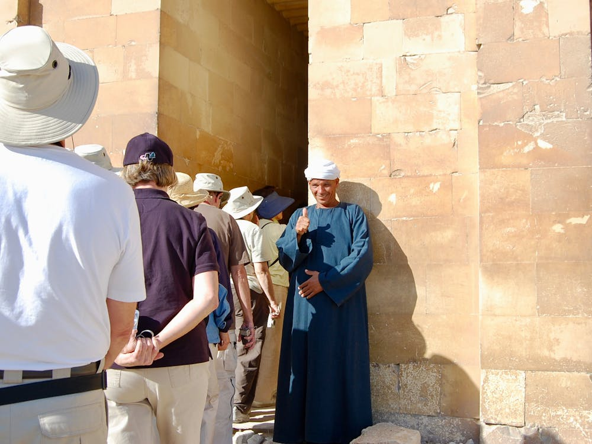

LISTENING
8. Look at the picture and answer the questions before you listen.

Where are these people?
What is happening in the picture?
What information do you expect the guide to give?
9. Listen and complete the sentences with ONE word or a number.
Scan to listen on your phone
The oldest madrasah on the square was built in
.
Up to
students lived in the rooms around the courtyard.
The ceiling of the Tilya-Kori Madrasah is decorated with real
.
Only
people are allowed at the top of the minaret at the same time.
The group will stay at the square for
hours.
10. Listen again and mark the statements True (T) or False (F).
Registan Square is surrounded by four madrasahs.
T / F
The oldest madrasah was built by a famous astronomer.
T / F
The golden ceiling of the Tilya-Kori Madrasah was restored in 1979.
T / F
Tickets for the minaret are only sold online.
T / F
The square is visited by about half a million tourists every year.
T / F
Visitors are not allowed to climb the minaret.
T / F
← Previous
Contents
Next →
81